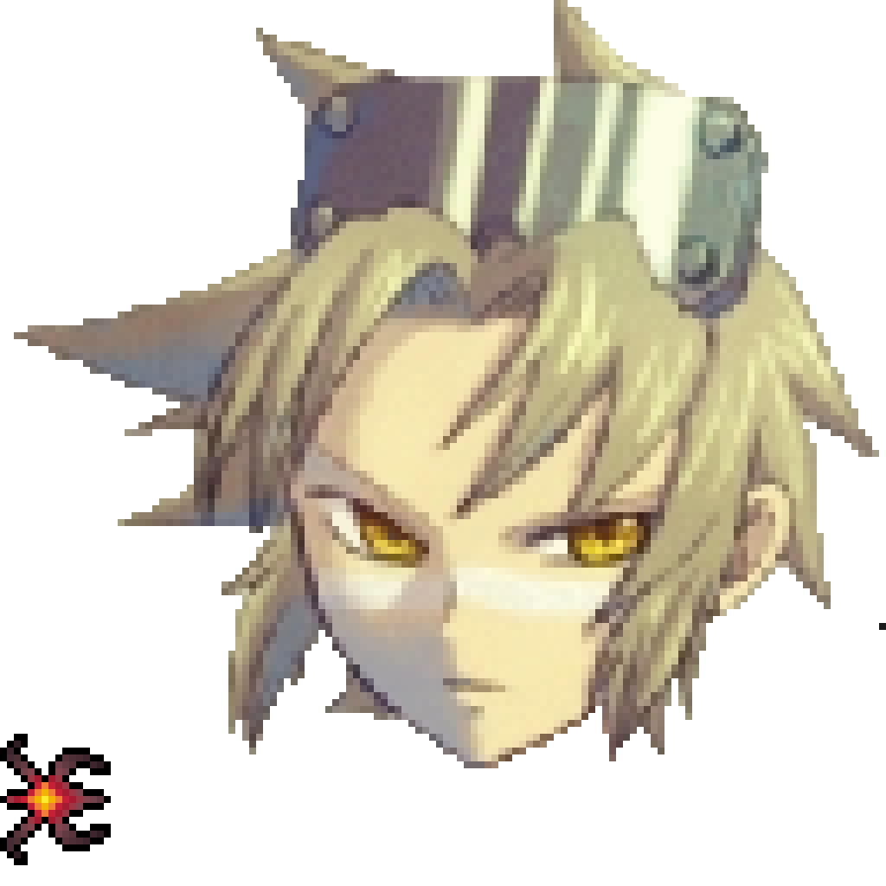
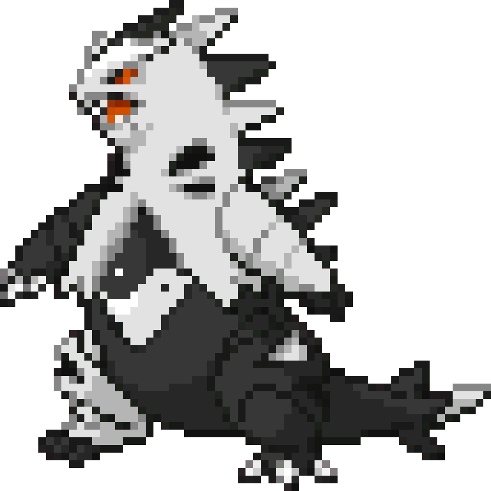

Greetings. My name is Ex Snagem Wes. I have been developing Pokemon ROMhacks since June 9, 2018. I have several published ROMhacks, such as Molten Emerald (Reborn and *barfs* the original...), HotPink, Snagemizer Gaia, etc. I am also a somewhat talented artist and a novice to coding. On the side, I also participate in competetive Pokemon play on https://play.pokemonshowdown.com. I particularly prefer the "Other Metas", where extra rules are added that flip gameplay into totally different styles. My favorite Pokemon is Golisopod. I ended up in ROMhacking after playing a lot of romhacks myself, and thinking to myself "I wish Manectric were actually usable." So I thought "why not make it usable myself?" That's what set me out upon this chaotic journey I've been on ever since. I've spent more hours than I could possibly count working on these games, and I've had my share of losses in them. Sometimes as you work, a tool could corrupt the program, often turning it to well over 4GB and breaking the entire file, and other things like that. Due to that, have around 1 GB of backups for Nova Silver Reborn from different stages just in case something happens again. I've started from scratch 4 times due to issues and I'm not doing it a fifth time. I'm a rather social person and enjoy partaking in gatherings, and more mild mannered parties occasionally. I've spent some time working with physics, and plan to get more serious in the near future. I work as a lifeguard as the present, and the salary is enough to manage.
